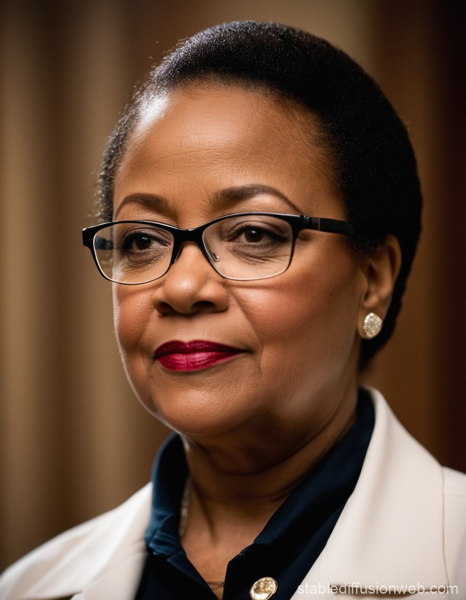
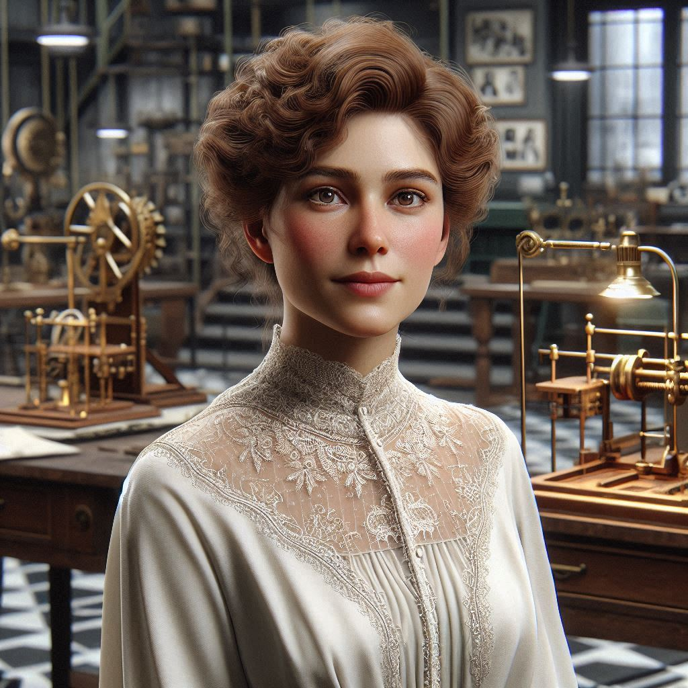
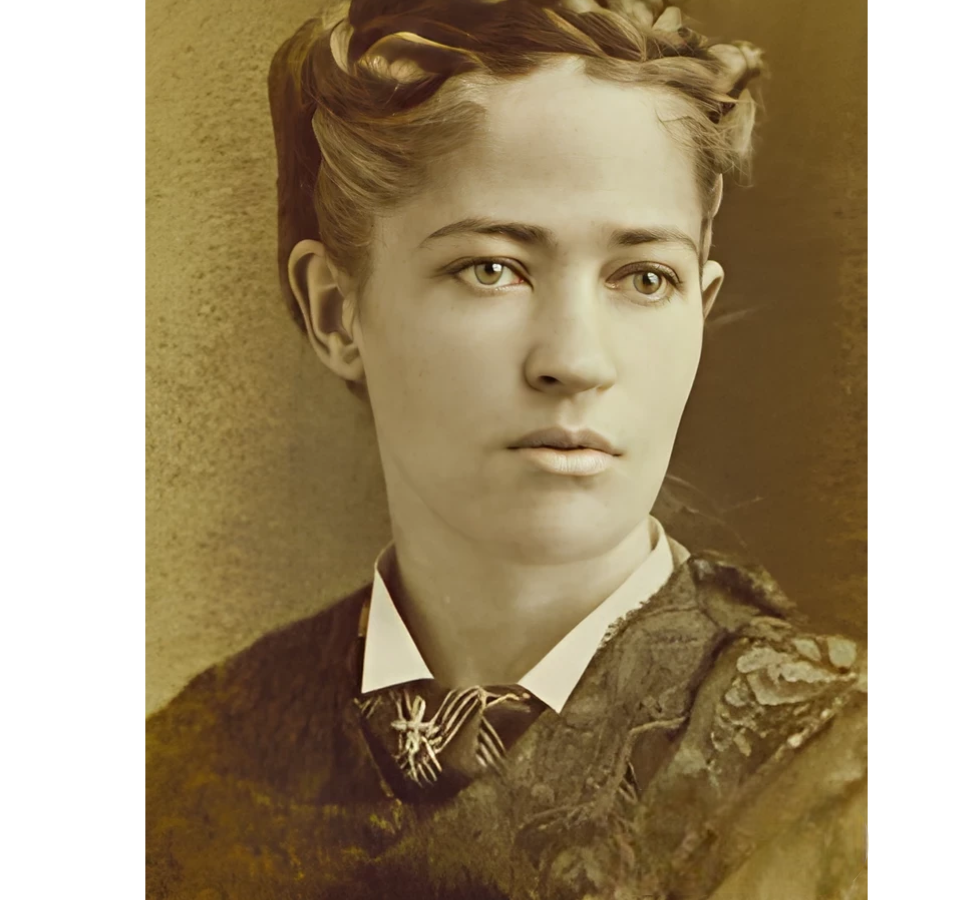
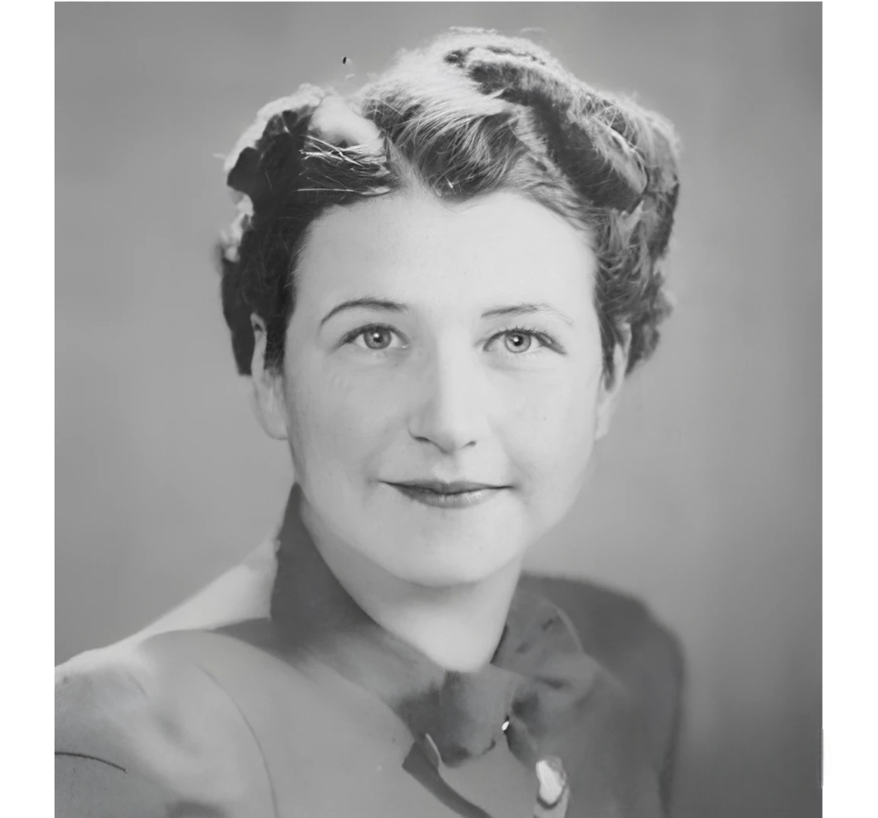
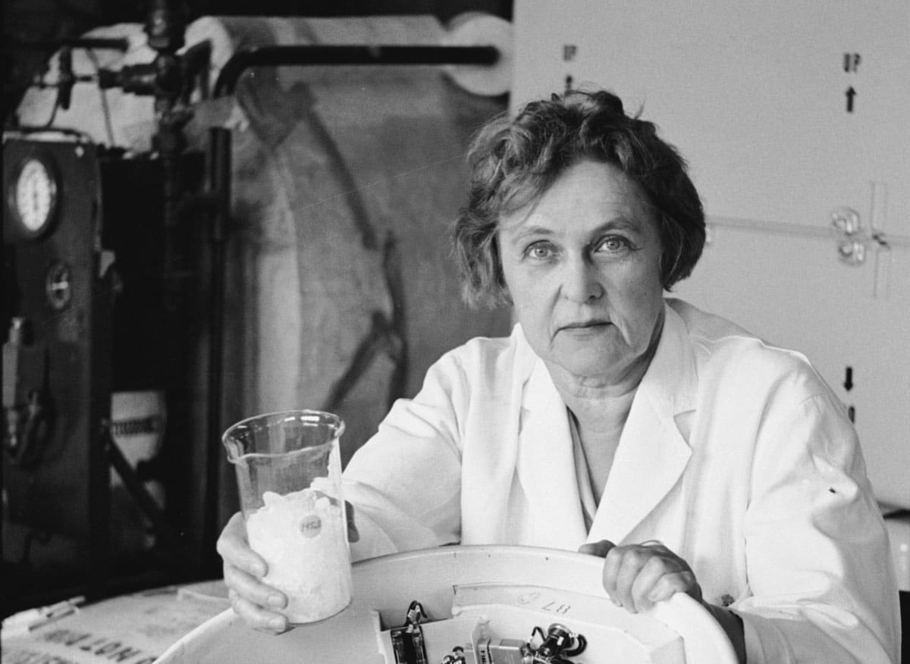
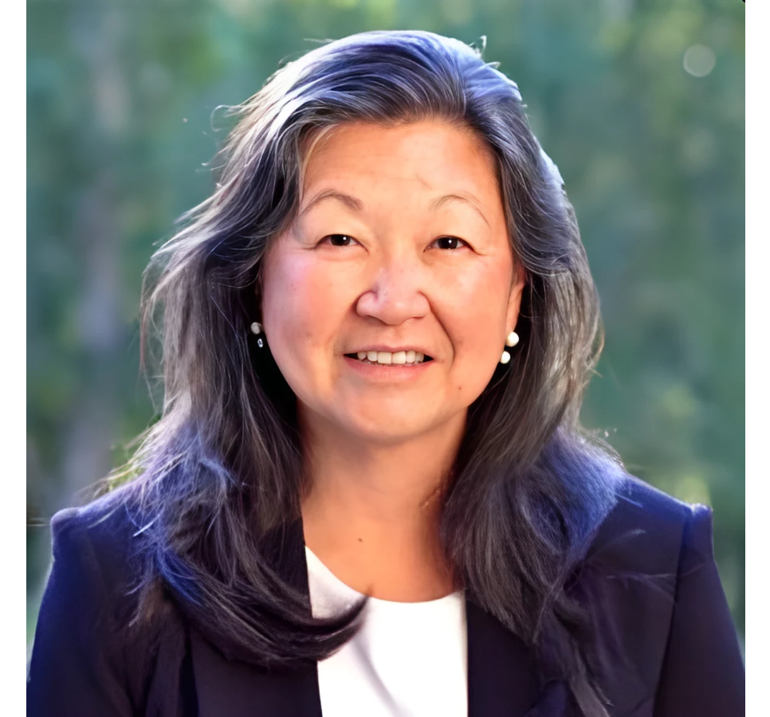
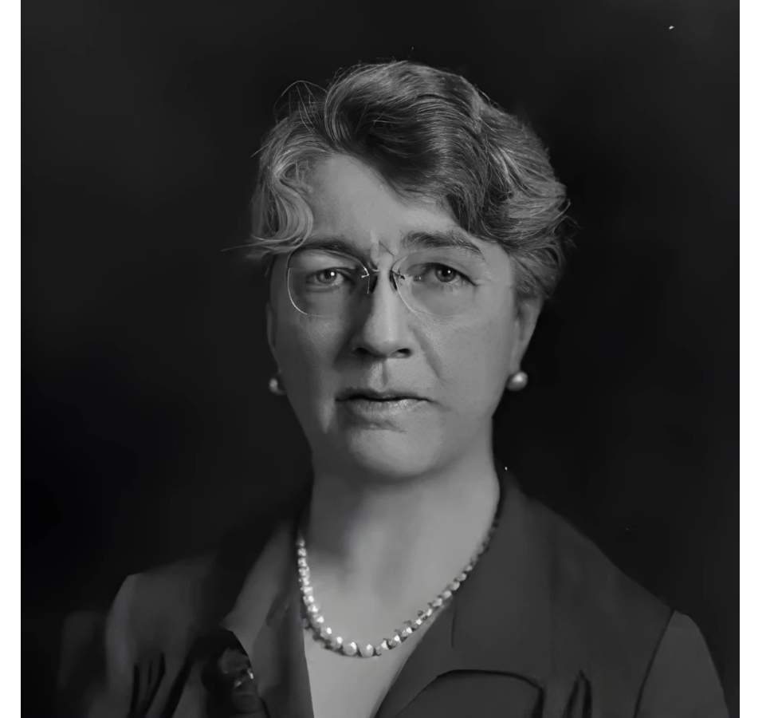

Hedy Lamarr
Co-inventora del sistema de espectro ensanchado, base del WiFi y Bluetooth.
Las matemáticas nos enseñan a ser disciplinados y a seguir un proceso ordenado para resolver problemas. - Ada Lovelace
Explora los hitos más importantes de las inventoras en la historia.
Co-inventora del sistema de espectro ensanchado, base del WiFi y Bluetooth.
Inventora del Kevlar, un material cinco veces más resistente que el acero.

Física pionera cuyos avances permitieron la creación del identificador de llamadas.
Desarrolló el primer algoritmo para una máquina, considerada la primera programadora.
Descubridora del radio y polonio, ganadora de dos premios Nobel en Física y Química.
Pionera en programación, inventó el lenguaje COBOL y popularizó el término "debugging".
Inventora del limpiaparabrisas en 1903, un dispositivo crucial para la seguridad vial.

Apodada “Lady Edison”, patentó más de 100 inventos, como la máquina de escribir múltiple.
Contribuyó al descubrimiento de la estructura del ADN gracias a su trabajo con difracción de rayos X.
Creadora del test de Apgar, una herramienta para evaluar la salud de los recién nacidos.
Matemática cuyas cálculos orbitales fueron cruciales para las misiones espaciales de la NASA.
Desarrolló el software de navegación para las misiones Apollo, incluida la llegada a la Luna.

Inventó el lavavajillas mecánico en 1886, revolucionando el trabajo doméstico.

Creó la primera sierra circular en 1813, usada en carpintería industrial.

Física e inventora conocida por sus avances en energía solar y el primer sistema de calefacción solar.

Patenta un método para aislar células madre, esencial en la investigación de enfermedades.

Descubre un tratamiento para la enfermedad del sueño, salvando miles de vidas en África.
Los inventos de estas mujeres han revolucionado industrias, salvado vidas y conectado al mundo. Desde las telecomunicaciones hasta los materiales avanzados, su legado continúa moldeando el futuro.
"El impacto de estas visionarias no se mide solo en sus patentes, sino en cómo transformaron la sociedad." — Reflexión histórica.